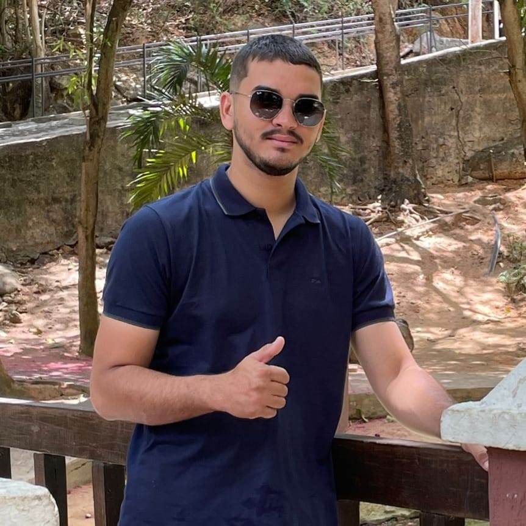

DESENVOLVEDORES
Ana Luiza Rodrigues Machado
Oiie, sou a Ana e tenho 18 anos Como uma amante de tecnologia posso dizer, a criança
que buscava saber como eram feitos os jogos de navegador finalmete descobriu! E que época boa...
Bom, estudo atualmente sobre todas as áreas da tec, confesso que fico encantanda pela cyber
security! Meu objetivo é me tornar uma grande analista de dados.
Isabela Castro

James Peter Barbosa
Rafael Claudeniro
Salve! Sou o Rafa, e é um prazer tê-lo(a) por aqui! Tenho 22 anos e desde pequeno tive
um grande interesse em explorar o mundo Tech e graças a muita curiosidade venho me mantendo motivado
todos os dias a aprender e ensinar cada vez mais Atualmente, sou estudante de Engenharia de Software
com 2 anos de experiência em desenvolvimento web full-stack e me especializando em Segurança da
Informação. (dica: Na duvida pergunte pra mim).
Mateus Souza
Olá, mundo! Eu sou o Mateus, tenho 24 anos, comecei nessa área com 23 anos e gosto
muito do que venho fazendo, desde jovem já gostava muito de tecnologia e quero sempre estar
aprendendo mais sobre. Atualmente faço graduação em tecnólogo em Análise e Desenvolvimento de
Sistemas e busco ser um desenvolvedor FullStack.
Saymon Medeiros

Fala pessoal! Me chamo Saymon e tenho 23 anos, sou apaixonado por tecnologia e
atualmente estou focado nos estudos de HTML e CSS. Meu objetivo é me tornar um desenvolvedor
fullstack, abrangendo tanto o desenvolvimento de front-end quanto o de back-end. Estou entusiasmado
com minha jornada de aprendizado e ansioso para construir uma carreira sólida no desenvolvimento
web.